{kind=link}
{kind=link}
 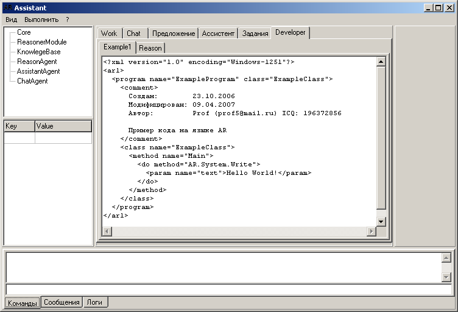
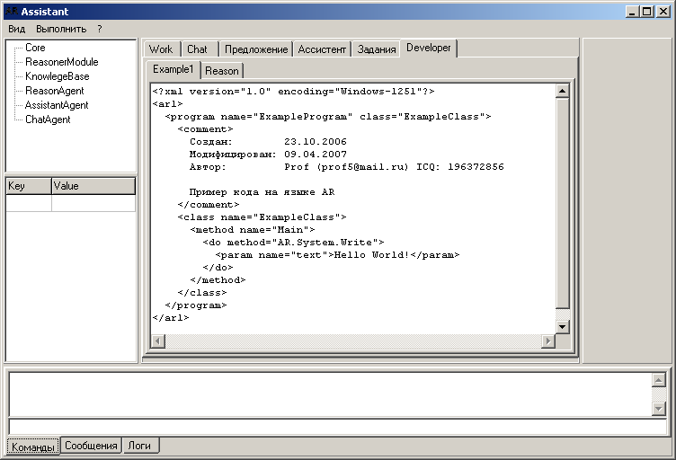
History of development AIAssistant
en ru
Yaroslav Loginov
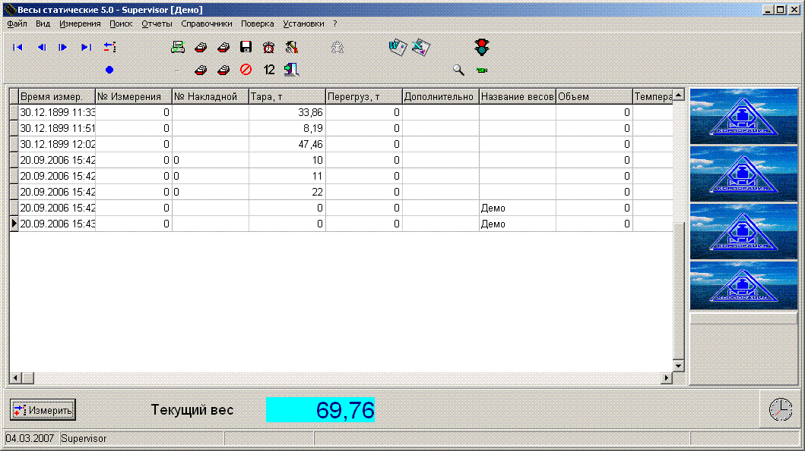
Program "Scales static". Purpose: weighing of cars empty and loaded.
The program runs for about 15 types of sensors, data are recorded in the database.
The program introduced view the video from surveillance cameras in real time and save pictures during the weigh-in
Provides data synchronization with the database on the server. Database any (through ADO): MS SQL, Oracle, Oracle Light and other.
2005-2006
Tools for working with the weight of the device WE2110. AxtiveX component.
Purpose: connection to SCADA programs, work with the device from any programming environment.
Program has the convenient interface of the device operation. Within the program implemented subprocess exchange with the SerialPort.
2005-2006
Software complex "Liana-M"
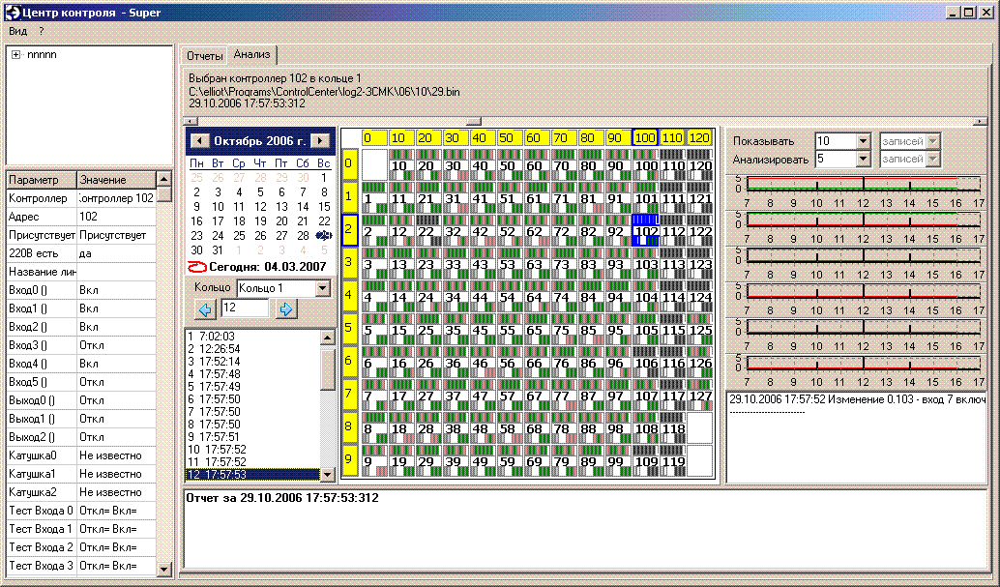
ControlCenter - Build reporting and analysis software binnary log files.
ControlCenterService - Service of control of entrance duty in the system. Data are stored in MS Access databases.
ControlUser - Program for adding and editing a list of modules, the list of users and their rights of access.
LianaControl - Program management and test controllers.
LianaPowerControl - Power management software 220V on controllers.
LianaLogConverter - The program to convert binary logs to a new type.
LianaLoging - The login program.
LianaRuner - A program that monitors the state of the OPC server.
Also implemented several programs to test.
2006-2007
In 2007 participated in the development of ShareWare project. (Suspended)
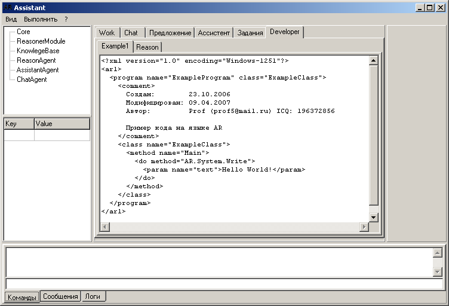
History of development AIAssistant
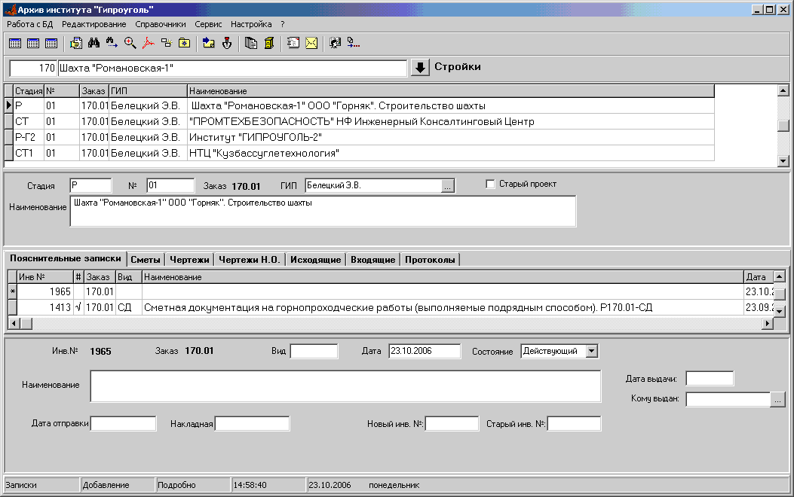

Electronic archive of design documentation
«Electronic archive»
Program «Electronic archive» is intended for automation of management of archives of design organizations.
«Electronic archive» can be used only for keeping the directory of paper documents in the archive or keeping electronic copies of documents.
Main program features
- Accounting documentation in the archives of the organization.
- A quick search of documents with any workplace.
- Maintain electronic versions and copies of archival documents.
- Provision of view electronic documents from any workplace.
- Formation of various reports on project documents.
- Organize of accounting of paper-based documents to users.
- Accounting and view incoming and outgoing correspondence.
- Sending documents by e-mail.
Unlike many of the electronic document management systems program «Electronic archive», providing the basic needs of the project organization, it is relatively simple to install and operate, much cheaper.
Program for a long time is used in the Institute «Giprougol» and constantly evolving.
Documentation and demo version on the website giprougol.ru
2008-2010
The system of planning and accounting of design works
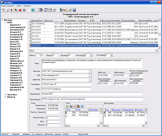
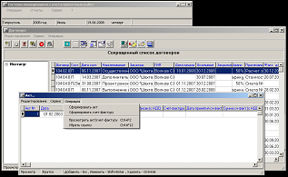
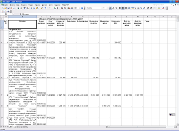
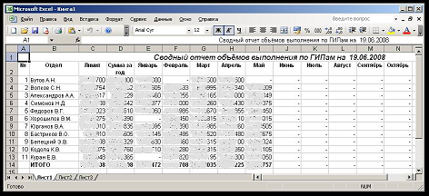
System possibilities
- Differentiation of access levels for users
- Accounting for contracts and operations contracts
- The control of performance of contracts (files contracts are automatically generated from the MS Word template)
- Acts
- Account
- Payment
- Shipping list
- Reference material
- Reports (built automatically in MS Word and MS Excel in the context directions, customers, etc)
2008-2010
The program complex consists of several interacting programs. In addition, the program VentSys provides the ability to store measurements and calculations in a single database (using Firebird, but you can use another SQL database).
Scheme of ventilation. Distribution of air in mine mountain development.
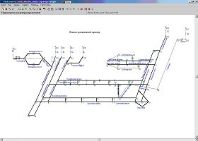
Functionality:
- natural air distribution for given characteristics of the network and fans;
- optimum air distribution to provide consumers with the necessary amount of air;
- stability calculation of ventilation;
- stability calculation of ventilation in case of fire;
- preparation and calculation of reverse mode of ventilation;
- timing of distribution of a fire;
- calculation of the concentrations of gas;
- doing calculations on the scheme ventilation.
Functionality ventilation schemes:
- the program is a specialized graphics editor to work with ventilation scheme (drawing lines, polyline, text, legend, move, and modify the properties of objects and label printing (the entire drawing or the selected fragment) automated split sheets);
- displays the estimated costs;
- displaying the results of the measurements of air and methane;
- display positions and text plan for the elimination of accidents;
- display overturned and gassy children after a fire;
- displays routes of movement of miners and mine rescue.
2008-2010
Ventilation of the mountain development
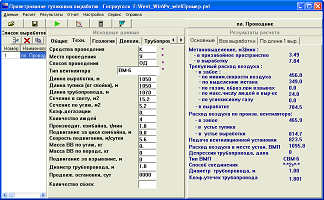
Functionality:
- full implementation of the "Guidelines..." for all conditions;
- calculation of natural gas and the actual gas;
- simultaneous calculation of several mountain development;
- development of the project of installation of the fan for one mountain development;
- the choice of the pipe diameter, the fans and the method of their connection;
- plotting of the fans;
- the ability to view the full Protocol of the calculation.
2008-2010
Calculation gas and ventilation of wall mines
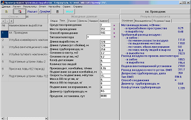
Functionality:
- full implementation of the "Guidelines..." for all conditions;
- calculation of gassing retinue of layers;
- calculation of natural gas and the actual gas;
- calculation of parameters of isolated methane drainage;
- simultaneous calculation of several faces;
- the ability to view the full Protocol of the calculation.
2008-2010
Calculation of degassing of mines

Functionality:
- implementation of "Guidelines...) (RD-15-09-2006);
- creation (drawing) schemes degassing;
- calculation of costs of methane-air mixture and diameters of pipelines;
- calculation of pressure for the (existing) pipe diameters;
- calculation of air consumption and pressure in the pipeline for the complex patterns (on the model of the natural distribution of mixture over the network).
2008-2010
The system of calculation and control of ventilation of mines
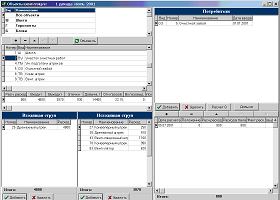
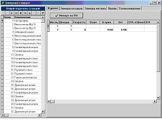
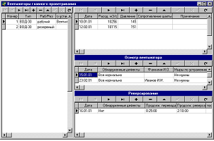
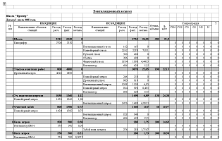
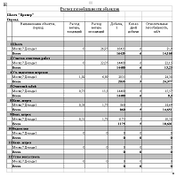
System design and control of ventilation is intended for automation of ventilation calculations and monitoring of the composition and quantity of air in mine.
The system provides automation of all payment and accounting works, which are regulated by the Rules of security, various normative and methodological documents for the design and operation of coal mines.
Main functions of the system design (calculation) ventilation:
- calculation gas mountain development of the natural gas;
- calculation gas mountain development of the actual gas; calculation of ventilation of blind development (with a choice of ventilators of local ventulation);
- calculation of ventilation treatment areas, including schemes with removal of gas;
- calculation of distribution of air in mine workings in normal and emergency modes.
The main functions of the control system:
- accounting measurements of air flow and concentration of methane.
- accounting air samples;
- accounting gas;
- control of insulation jumpers and fire plots;
- control of ventilation installations
- import and data control system Mikon.
The reporting functions of the system:
- the establishment of the categories of mine gas;
- formation of ventilation log (forms 1, 2, 3);
- formation log on measurement and examinations;
- formation of documents on the results of calculations;
- maintain emergency response plan.
Service functions of the system:
- formation and maintenance of ventilation schemes;
- unloading base for transmission to the inspecting organizations;
- maintenance of normative documents on ventilation.
Application of the system will provide:
- correct and consistent use of all the methodological regulations of the various guidelines on the calculation of ventilation shafts;
- increase the objectivity of the measurements of the composition and the air flow;
- the necessary relationship between the measurements and calculations, the ability to automatically use the results of measurements, calculations;
- easy and rapid transmission of results ventilation calculations and measurements of inspecting authorities.
2008-2010
A new program for complex calculation of ventilation of mines. In one program merged: scheme of ventilation calculation mountain development.
"Ventilation of mines 2010-2013"
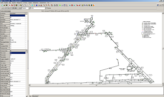
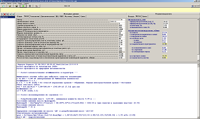
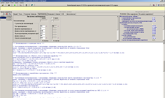
2010-2013
www.giprougol.ru/technologies/software/ventsh
© Prof1983 2007-2014
17.06.2013-06.05.2014
{kind=link}
{kind=link}
{kind=link}
{kind=link}
{kind=link}
{kind=link}
{kind=link}
{kind=link}
{kind=link}
{kind=link}
{kind=link}